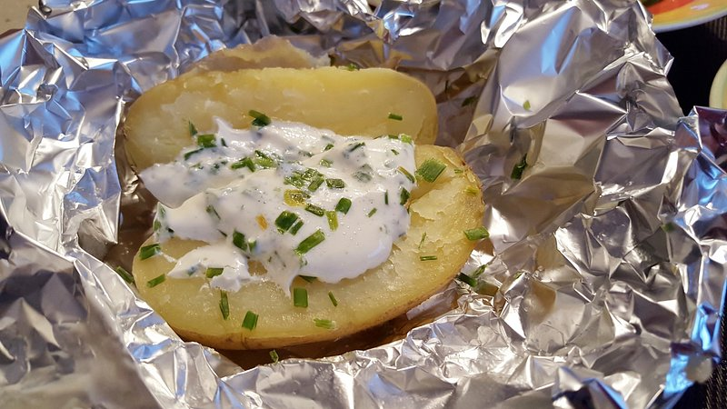

Baked Potato

Descriptions
A quick and easy to make baked potatoes in the air fryer
Ingredients
- 2 potatoes
- oil of choice
- toppings of choice
- salt
Steps
- Preheat air fryer to 400 Fahrenheit
- wash and pierce the skin of the potatoes
- rub oil on potatoes
- (optional) you may apply salt or other spices to the skin before cooking
- cook for 32 to 36 minutes or until the inside is tender
- remove from air fryer and let sit for a few minutes
- cut into potatoes and add toppings and spices
Back to homepage